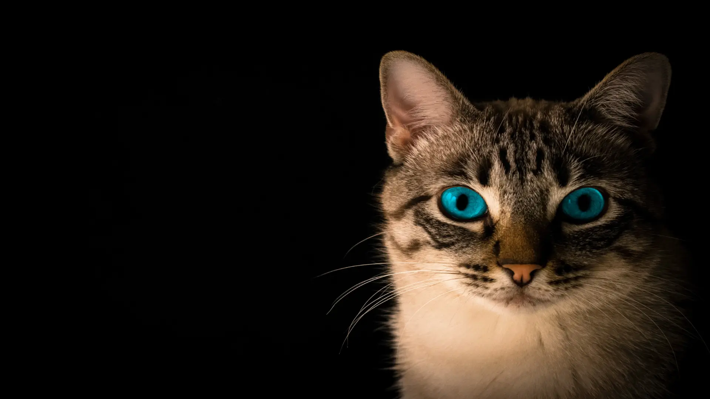

Cat Care
The History
of Cats
Our Cats have been members of our family for as long as we can remember. They're amazing likable snuggle companions. But how much do we actually know about the history of cat ?